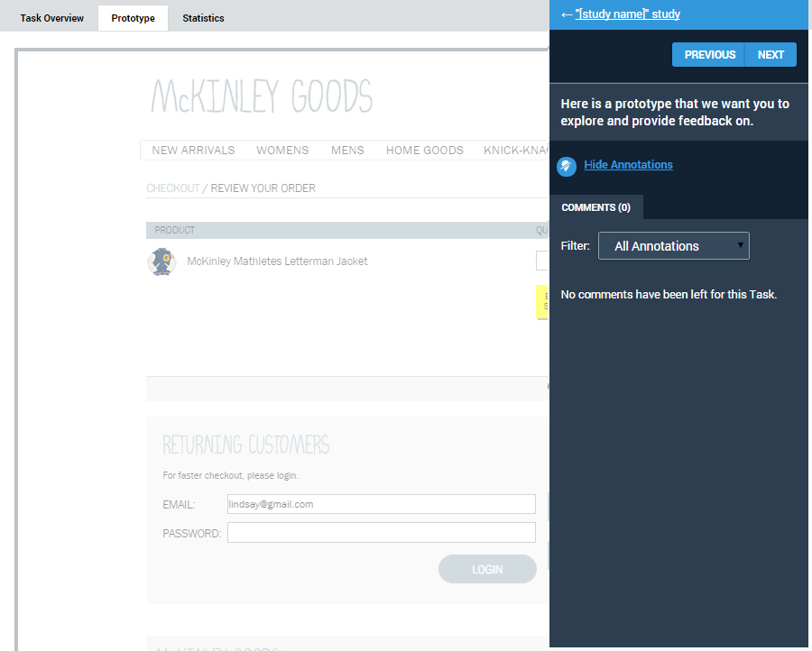

The Prototype tab displays the fully-interactive prototype upon which the task was based, and displays participants' responses to each page of the prototype and to the overall task.

View all annotations icons dropped on the page. The page fades significantly so that you can view the annotation icons more easily.